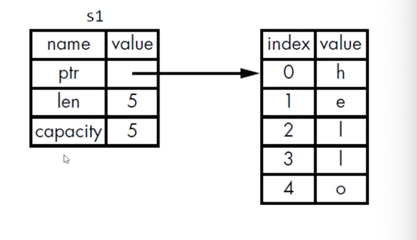
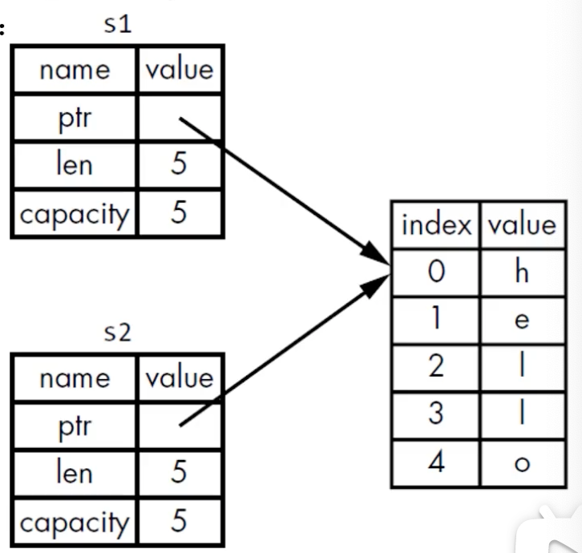
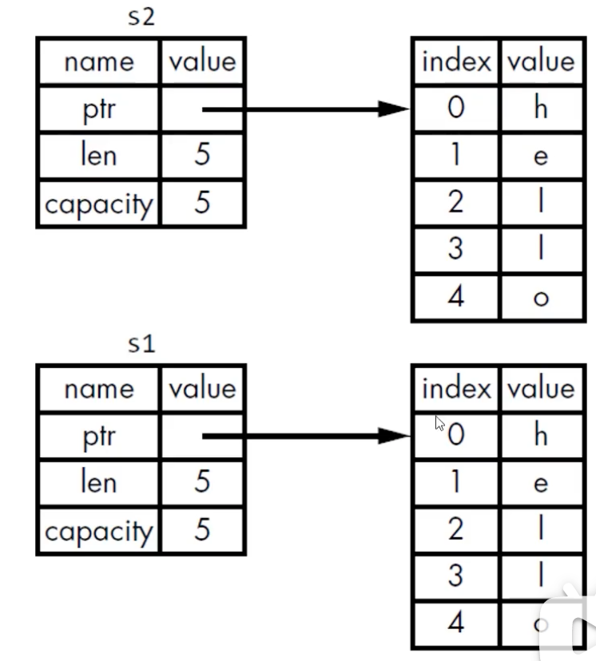
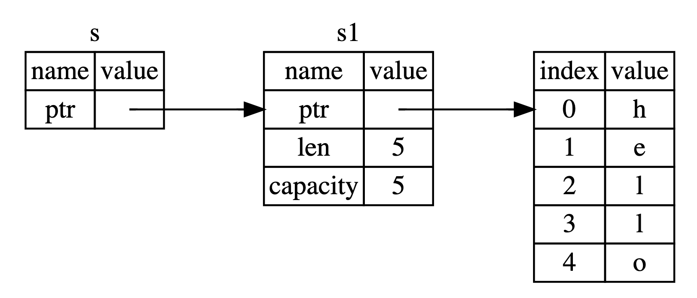

1. rust
1 | rustc --version |
2. cargo
1 | cargo --version |
2.1 cargo.toml
TOML (Tom’s Obvious Minimal Language) 格式，是Cargo是配置格式
1 | [package] # 区域标题，表示下方内容是用来配置包（package）的 |
2.2 crate
在rust里面， 代码的包称为crate
2.3 非cargo创建的项目
非cargo创建的项目，转化为使用cargo
- 把源代码文件移动到src下
- 创建Cargo.html并填写相应的配置
2.4 Cargo 构建项目
1 | cargo build # 构建 |
2.4.1 cargo.lock
第一次运行 cargo build会在项目目录生成 cargo.lock文件
1 | # This file is automatically @generated by Cargo. |
该文件负责追踪项目以来的精确版本
不需要手动修改该文件
2.5 构建和运行cargo项目
1 | cargo run |
如果源代码没有更改，直接运行上次生成的二进制文件；
2.6 cargo check
1 | cargo check # 检查代码，确保能通过编译，但是不产生任何可执行文件； |
cargo check效率较build命令高很多，编写代码时，可反复使用cargo check检查代码，提高效率；
2.7 发布
1 | cargo build --release |
2.8 添加依赖包
1 | # Cargo.html |
在dependencies区域下，直接填写 rand = “0.3.14”即可；
3. guess number-pro
1 | fn main(){ |
3.1 read_line
1 | pub fn read_line(&self, buf: &mut String) -> io::Result<usize> |
3.2 完整代码
1 | use std::io; |
4. 通用编程概念
4.1 变量与可变性
声明变量用let
默认情况，变量是immutable
声明变量，在变量前面加上mut，就可以使变量可变；
4.1.1 变量与常量
常量在绑定值以后也是不可变的，但是它与不可变的变量有很多区别：
不可以使用mut，常量永远都是不可变的；
声明变量使用const关键字，它的类型必须被标注；
常量可以在任何作用域内进行声明，包括全局作用域
常量只可以绑定到常量表达式，无法绑定到函数的调用结果或只能在运行时才能计算出的值；
在程序运行期间，常量在其声明的作用域内一直有效
命名规范： Rust里常量使用全大写字母，每个单词之间用下划线分开；
1 | MAX_POINTS:u32 = 100_00; |
4.1.2 Shadowing(隐藏)
可以使用相同的名字声明新的变量，新的变量就会shadow（隐藏）之前声明的同名变量
1 | fn main(){ |
4.1.3 shadow与mut
Shadow和把变量标记为mut是不一样的，
如果不使用let关键字，那么重新给非mut的变量赋值会导致编译时错误
而使用let声明的同名新变量，也是不可变的；
使用let声明的同名新变量，它的类型可以与之前不同；
4.2 数据类型
Rust是静态编译语言，在编译时必须知道所有变量的类型；
基于使用的值，编译器通常能够推断出它的具体类型；
但如果可能的类型比较多（例如把String转为整数的parse方法），就必须添加类型的
标注，否则编译会报错
1 | let num = '42'.parse(); // error |
4.2.1 标量类型
一个标量类型代表一个单个的值；
Rust有四个主要的标量类型：
4.2.1.1 整数类型
整数类型没有小数部分
例如u32就是一个无符号的整数类型，占据32位的空间
无符号 以u开头
有符号 以i开头
Rust的整数类型列表如图
| Length | Signed | Unsigned |
|---|---|---|
| 8-bit | i8 | u8 |
| 16-bit | i16 | u16 |
| 32-bit | i32 | u32 |
| 64-bit | i64 | u64 |
| 128-bit | i128 | u128 |
| arch | isize | usize |
isize 和 usize类型
isize 和 usize类型的位数由程序运行的计算机的架构所决定
如果是64位计算机，那就是64位，如果32位计算机，就是32位；
使用isize和usize 的主要场景是针对某中集合进行索引操作；
4.2.1.2 浮点类型
f32
f64
4.2.1.3 布尔类型
true
false
4.2.1.4 字符类型
char 4个字节
4.2.2 复合类型
复合类型可以将多个值放在一个类型里
Rust提供了两种基础的复合类型： 元祖（Tuple）、数组
4.2.2.1 Tuple
Tuple可以将多个类型的多个值放在一个类型里
Tuple的长度是固定的：一旦声明就无法改变
1 | let tup: (i32, f64, u8) = (500, 6.4, 1); |
4.2.2.2 数组
数组中每个元素的类型必须相同
数组的长度也是固定的
数组的用处
如果想让你的数据存放在stack上而不是heap上，或者想保证有固定数量的元素，这时使用数组更有好处；
数组的类型
[类型; 长度]
1 | let a: [i32; 5] = [1,2,3,4,5]; |
另一种声明数组的方法
如果数组的每个元素都相同，那么可以在：
在中括号里制定初始值；
1 | let a = [3;5]; |
访问数组的元素
数组是stack上分配的单个块的内存
可以使用索引来访问数组的元素（例子）
如果访问的索引超出了数组的范围，那么；
- 编译会通过
- 运行会报错（runtime时会panic）
1 | fn main(){ |
Rust不会允许其继续访问相应的地址的内存；
4.3 函数
函数名 多个单词用下划线连接；
parameter 行参
arguments 实参
4.3.1 函数的返回值
在-> 符号后边声明函数返回值的类型，但是不可以为返回值命名；
在rust里面，返回值
4.4 注释
4.5 控制流
4.5.1 if else
match 重构多重if else语句
4.5.2 循环
Rust 提供了三种循环： loop， while 和 for
1 | fn main(){ |
4.5.2.1 使用for循环遍历集合
由于for循环的安全，简洁性，所以它在Rust里用的最多；
1 | fn main() { |
例子： 用for循环显示倒计时的例子
载入标准库
Range
指定一个开始数字和一个结束数字，Range可以生成它们之间的数字（不含结束）
rev方法可以反转Range
1 | fn main() { |
5. 所有权
所有权是Rust最独特的特性，它让Rust无需GC就可以保证内存安全；
所有程序在运行时都必须管理它们使用计算机内存的方式
- 有些语言有垃圾收集机制，在程序运行时，它们会不断地寻找不再使用的内存
- 在其他语言中，程序员必须显式地分配和释放内存；
Rust采用了第三种方式
- 内存是通过一个所有权系统来管理的，其中包含一组编译器在编译时检查的规则；
- 当程序运行时，所有权特性不会减慢程序的运行速度；
5.1 stack vs heap
在像Rust这样的系统级编程语言里，一个值是在stack上还是在heap上对语言的行为和你为什么要做某些决定是有更大的影响的；
在你的代码运行的时候，stack 和 heap都是你可用的内存，但他们的结构很不相同；
存储数据
stack按值的接收顺序来存储，按相反的顺序将它们移除（后进先出，LIFO）
- 添加数据叫做压入栈
- 移除数据叫做弹出栈
所有存储在Stack上的数据必须拥有已知的固定的大小；
- 编译时大小未知的数据或运行时大小可能发生变化的数据必须存在heap上
heap内存组织性差一点；
- 当你把数据放入heap时，你会请求一定数量的空间
- 操作系统在heap里找到一块足够大的空间，把它标记为在用，并返回一个指针，也就是这个空间的地址
- 这个过程叫做heap上进行分配，有时仅仅称为“分配”
把值压到stack上不叫分配
因为指针是已知固定大小的，可以把指针存放在stack上。
- 但如果想要实际数据，你必须使用指针来定位；
把数据压到stack上要比在heap上分配快得多：
- 因为操作系统不需要寻找用来存储新数据的空间，那个位置永远都在stack的顶端
在heap上分配空间需要做更多的工作：
- 操作系统首先需要找到一个足够大的空间来存放数据，然后要做好记录方便下次分配；
访问数据
访问heap中的数据要比访问stack中的数据慢，因为需要通过指针才能找到heap中的数据；
- 对于现代的处理器来说，由于缓存的缘故，如果指令在内存中跳转的次数越少，那么速度就越快
- 如果数据存放的距离比较近，那么处理器的处理速度就会更快一些（stack上）
- 如果数据之间的距离比较远，那么处理速度就会慢一些（heap上）
- 在heap上分配大量的空间也是需要时间的；
函数调用
调用函数时，值被传入到函数（也包括指向heap的指针），函数本地的变量被压到stack上，当函数结束后，这些值会从stack上弹出；
5.2 所有权存在的原因
5.2.1 所有权解决的问题
跟踪代码的哪些部分正在使用heap的哪些数据；
最小化heap上的重复数据量
情理heap上未使用的数据以避免空间不足
一旦懂得所有权，那么就不需要经常去想stack或heap了；
但是知道管理heap数据是所有权存在的原因，这有助于理解它为什么会这样工作；
5.3 所有权规则
每个值都有一个变量，这个变量是该值的所有者；
每个值同时只能有一个所有者；
当所有者超出作用域（scope）时，该值将被删除；
5.3.1 变量作用域
scope就是程序中一个项目的有效范围
1 | fn main(){ |
5.3.2 String类型
Rust还有第二种字符串类型： String
- 在heap上分配，能够存储在编译时未知数量的文本；
5.3.2.1 创建String类型的值
可以使用from函数从字符串字面值创建出String类型
1 | let s = String::from("hello") |
1 | fn main(){ |
5.3.2.2 内存和分配
为什么string类型的值可以修改，而字符串字面值不能修改
- 因为它们处理内存的方式不同；
字符串字面值，在编译时就知道它的内容了，其文本内容直接被硬编码到最终的可执行文件里；
- 速度快、高效，是因为其不可变性；
String类型，为了支持可变性，需要在heap上分配内存来保存编译时未知的文本内容：
操作系统必须在运行时来请求内存，
- 这步通过调用String::from来实现
当用完String之后，需要使用某种方式将内存返回给操作系统
这步，在拥有GC的语言中，GC会跟踪并清理不再使用的内存
没有GC，就需要我们去识别内存何时不再使用，并调用代码将它返回；
- 如果忘了，那就浪费内存
- 如果提前做了，变量就会非法
- 如果做了两次，就是Bug，必须一次分配对应一次释放；
Rust采用了不同的方式：对于某个值来说，当拥有它的变量走出作用范围时，内存会立即自动的交还给操作系统；
- drop函数
当变量走出作用域的时候，会调用drop函数
5.4 变量和数据交互的方式
5.4.1 移动（Move）
多个变量可以与同一个数据使用一种独特的方式来交互；
1 | fn main() { |
- 一个String由3部分组成：
- 一个指向存放字符串内容的内存的指针 ptr
- 一个长度 len
- 一个容量 capacity

- 上面这些东西放在stack上
- 存放字符串内容的部分在heap上
- 长度len，就是存放字符串内容所需的字节数；

1 | let s1 = String::from("hello"); |
当把s1赋给s2，String的数据被复制了一份：
- 在stack上复制了一份指针、长度、容量
- 并没有复制指针所指向的heap上的数据
当变量离开作用域时，Rust会自动调用drop函数，并将变量使用的heap内存释放；
当s1、s2离开作用域时，它们都会尝试释放相同的内存
- 会引起二次释放（double free）的bug
rust为了保证内存安全：
- Rust没有尝试复制被分配的内存
- Rust让s1失效
- 当s1离开作用域的时候，rust不需要释放任何东西；
1 | fn main() { |
5.4.2 浅拷贝和深拷贝
浅拷贝
深拷贝
你也许会将复制指针、长度、容量视为浅拷贝，但由于 Rust 让 s1 失效了，所以我们用一个新的术语：移动（Move）
隐含的一个设计原则： Rust不会自动创建数据的深拷贝
- 就运行时性能而言，任何自动赋值的操作都是廉价的；
5.4.3 变量和数据交互的方式：克隆（Clone）
如果真想对heap上面的String数据进行深度拷贝，而不仅仅是Stack上的数据，可以使用clone方法
1 | fn main() { |
Clone 相当于无论是Stack上还是heap上的数据，都统统复制一遍

5.4.4 复制
1 | fn main() { |
Clone 比较消耗资源；主要还是针对heap上的数据操作。
而针对Stack上的数据，只需要复制就好了；
5.4.4.1 Copy trait
Rust 提供了一个名为Copy的 trait，trait简单理解为接口
Copy trait，可以用于像整数这样完全存放在stack上面的类型；
如果一个类型实现了Copy这个trait，那么旧的变量在赋值后仍然可用；
如果一个类型或者该类型的一部分实现了Drop trait，那么Rust不允许让它再实现Copy trait了
5.4.4.2 一些拥有Copy trait的类型
任何简单标量的组合类型都可以是Copy的
任何需要分配内存或某种资源的都不是Copy的
一些拥有Copy trait的类型
- 所有整数类型，例如 u32
- bool
- char
- 所有浮点类型 例如f64
- Tuple（元组），如果其所有的字段都是Copy的
- (i32,i32)是
- (I32, String) 不是
5.5 所有权与函数
在语义上，将值传递给函数和把值赋给变量是类似的：
5.5.1 将值传递给函数将发生移动或复制
1 | fn main() { |
5.5.2 返回值与作用域
函数在返回值的过程中同样也会发生所有权的转移
1 | fn main() { |
一个变量的所有权总是遵循同样的模式：
- 把一个值赋给其它变量时就会发生移动
- 当一个包含heap数据的变量离开作用域时，它的值就会被drop函数清理，除非数据的所有权移动到另一个变量上了；
5.6 引用
如果让函数使用某个值，但不获得其所有权？
1 | fn main() { |
Rust有一个特性叫做 引用（Reference)
5.6.1 引用
1 | fn main(){ |

如上图，s就是s1的引用，
s实际上是一个指针，它指向s1。
s1也是一个指针，它指向存在heap上的真实的内容；
calcuate_length 参数的类型是 & String而不是String， &符号就表示引用：允许你引用某些值而不取得其所有权
5.6.2 借用
1 | fn calcuate_length(s: &String) -> usize { |
- 所以当一个函数使用引用作为它的参数而不是一个真实的值的时候，我们就不必为了归还所有权，而把这个值返回回去；因为也不曾获得这个参数的所有权
- 这种将引用作为函数参数的行为，我们就将其称为借用；
是否可以修改借用的东西？
- 不行
- 和变量一样，引用默认也是不可变的
- 只要设置mut，就可以修改借用的东西
1 | fn main() { |
5.6.3 可变引用
可变引用有一个重要的限制： 在特定作用域内，对某一块数据，只能有一个可变的引用；
这样做的好处是可在编译时防止数据竞争；
数据竞争是如何发生的
- 两个或多个指针同时访问同一个数据
- 至少有一个指针用于写入数据
- 没有使用任何机制来同步对数据的访问
可以通过创建新的作用域，来允许非同时的创建多个可变引用（例子）
1 | fn main(){ |
不可以同时拥有一个可变引用和一个不变的引用
- 多个不变的引用是可以的
1 | fn main(){ |
5.6.4 悬垂引用 Dangling References
一个指针引用了内存中的某个地址，而这块内存可能已经释放并分配给其它人使用了；
Rust里，编译器可保证引用永远都不是悬空引用；
- 如果你引用了某些数据，编译器将保证在引用离开作用域之前数据不会离开作用域；
1 | fn main(){ |
5.6.5 引用的规则
在任何给定的时刻，只能满足下列条件之一：
- 一个可变的引用
- 任意数量不可变的引用
引用必须一直有效
5.7 切片 slice
Rust的另外一种不持有所有权的数据类型：切片（slice）
编写一个函数：
- 它接收字符串作为参数
- 返回它在这个字符串里找到的第一个单词
- 如果函数没找到任何空格，那么整个字符串就被返回；
1 | fn main() { |
然而上面的函数设计是有问题的， name_index 和 s 太过耦合了。当s被清空之后，name_index的值就不再有意义了；
那如何确保 s 和 name_index 之间的同步性呢；
解决方案： 字符串切片
5.7.1 字符串切片
字符串切片是指向字符串中一部分内容的引用
形式： [开始索引…结束索引]
1 | let a = [1, 2, 3, 4, 5]; |
几个语法糖
注意：
- 字符串切片的范围索引必须发生在有效的UTF-8字符边界内；
- 如果尝试从一个多字节的字符中创建字符串切片，程序会报错并退出
1 | fn main() { |
5.7.2 字符串字面值是切片
字符串字面值被直接存储在二进制程序中；
1 | let s = "he" // s 为 &str类型，即字符串切片 |
变量s的类型是&str， 它是一个指向二进制程序特定位置的切片
- &str是不可变引用，所以字符串字面值也是不可变的；
5.7.3 将字符串切片作为参数传递
1 | fn main() { |
定义函数时使用字符串切片来代替字符串引用会使我们的API更加通用，且不会损失任何功能；
6. struct
6.1 定义并实例化struct
1 | struct User { |
一旦struct的实例是可变的，那么实例中所有的字段都是可变的。不允许部分可变，部分不可变
6.1.1 tuple struct
1 | struct Color(i32,i32,i32); |
black和origin是不同的类型，是不同tuple struct的实例
6.1.2 Unit-Like Struct（没有任何字段）
- 可以定义没有任何字段的struct，叫做Unit-Like Struct（因为与（），单元类型类似）
- 适用于需要在某个类型上实现某个trait，但是在里面又没有想要存储的数据
6.1.3 struct 数据的所有权
1 | struct User { |
- 这里的字段使用了String 而不是 &str
- 该struct实例拥有其所有的数据
- 只要struct实例是有效的，那么里面的字段数据也是有效的
- struct里也可以存放引用，但这需要使用生命周期；
- 声明周期保证只要struct实例是有效的，那么里面的引用也是有效的；
- 如果struct里面存储引用，而不使用生命周期，就会报错
6.1.4 计算面积的例子
1 | // 例子1 |
6.1.5 几种模式
1 | std::fmt::Display |
6.2 struct的方法
方法和函数类似： fn关键字、名称、参数、返回值
方法与函数不同之处：
- 方法是在struct（或enum、trait对象）的上下文中定义
- 第一个参数是self，表示方法被调用的struct实例
1 | struct Rectangle { |
6.2.1 方法调用的运算符
在调用方法时， Rust根据情况自动添加 &、 &mut 或 *， 以便object可以匹配方法的签名；
1 | // 两行代码效果相同： |
6.2.2 方法参数
方法可以有多个参数
1 | struct Rectangle { |
6.3 关联函数
可以在impl块里定义不把self作为第一个参数的函数，它们叫关联函数（不是方法）
- 例如： String::from()
关联函数通常用于构造器
- ::符号
- 关联函数
- 模块创建的命名空间
1 | struct Rectangle { |
7. 枚举与模式匹配
7.1 定义
1 | enum Ip { |
1 | enum IpAddrKind { |
7.1.1 将数据附加到枚举的变体中
1 | enum IpAddr { |
我们直接将数据附加到枚举的每个成员上，这样就不需要一个额外的结构体了。
优点：
- 不需要额外使用struct
- 每个变体可以拥有不同的类型以及关联的数据量
1 | enum Ip { |
7.2 option枚举
定义于标准库中
在Prelude中
描述了： 某个值可能存在（某种类型）或不存在的情况
7.2.1 Option
Rust中类似Null概念的枚举 - Option
Rust没有Null
其它语言中：
- Null是一个值，它表示“没有值”
- 一个变量可以处于两种状态： 空值（null）、非空
Null引用： Billion Dollar Mistake
Null的问题在于： 当你尝试像使用非Null值那样使用Null值的时候，就会引起某种错误
Null的概念还是有用的：因某种原因而变为无效或缺失的值；
1 | // 标准库中的定义： |
它包含在Prelude（预导入模块）中，可直接使用；
- Option
- Some
- None
1 | let some_number = Some(5); |
Option
Option
1 | fn main(){ |
若想使用Option
这就避免了其它语言中最常见的那个错误；那就是假设某个值存在，但它实际上为Null
1 | // 比如在C# |
7.3 match
控制流运算符 - match
- match允许一个值与一系列模式进行匹配，并执行匹配的模式对应的代码；
- 模式可以是字面量、变量名、通配符
1 | enum Coin { |
7.3.1 绑定值的模式
匹配的分支可以绑定到被匹配对象的部分值
- 因此，可以从enum变体中提取值
1 |
|
7.3.2 匹配Option
1 | fn main() { |
7.3.3 match必须穷举所有可能
_ 通配符： 替代其余没有列出的值；
1 | let some_u8_value = 0u8; |
7.4 if let
处理只关心一种匹配而忽略其它匹配的情况
1 | let some_u8_value = Some(0u8); |
if let 优缺点
更少的代码，更少的锁紧，更少的模版代码
放弃了穷举的可能
可以把 if let 看作是 match的语法糖
1 | // if let 搭配 else |
8. Package, Crate 和 Module
模块系统：
- Package（包）， Cargo的特性，让你构建、测试、共享crate；
- Crate（单元包）， 一个模块树，它可产生一个library或执行文件；
- Module（模块）， use： 让你控制代码的组织、作用域、私有路径；
- path（路径）： 为struct、function 或module 等项命名的方式；
8.1 Package 和 Crate
crate上面是package，
Crate的类型
- binary
- library
Crate Root
- 是源代码文件
- Rust编译器从这里开始，组成你的Crate的根Module
一个Package
- 包含1个Cargo.toml, 它描述了如何构建这些Crates；
- 只能包含0-1个library crate；
- 可以包含任意数量的binary crate；
- 必须至少包含一个crate（library或binary）
1 | $> cargo new my-pro |
8.1.1 Cargo的惯例
src/main.rs
- src/main.rs // package 的入口文件
- Binary crate 的 crate root （cargo会默认让 main.rs做为crate的根）
- crate名与package名相同 （也是指这个binary crate的名和包名相同，都是my-pro）
- src/lib.rs
- Package 包含一个library crate
- library crate 的 crate root
- crate名与package名相同 （也都是my-pro）
复习：
如果有main.rs,就说明有一个 binary crate。
如果有lib.rs , 就说明有一个library crate。
两个都是入口文件，都是crate的根。而crate名都与package名相同。
cargo会把crate root文件交给rustc 来构建library 或 binary
一个Package可以同时包含main.rs 和 lib.rs,
- 表明，这个package含有一个 binary crate，一个library crate。名称都与package名相同
- 一个package可以有多个binary crate
- 文件都放在src/bin
- 每个文件是单独的binary crate
8.2 Crate的作用
将相关功能组合到一个作用域内，便于在项目间进行共享，也能防止命名冲突
例如： rand crate，访问它的功能需要通过它的名字： rand
8.3 定义module来控制作用域和私有性
Module
在一个crate内，将代码进行分组；
增加可读性，易于复用；
控制项目（item）的私有性，public、private
8.3.1 建立module
- mod 关键字{}
- 可嵌套
- 可包含其它项（struct、enum、常量、trait、函数等）的定义
1 | #cargo new my-pro |
main.rs lib.rs 都叫crate roots；
- 这两个文件（任意一个）的内容形成了名为crate的模块，位于整个模块树的根部；
- 整个模块树在隐式的crate模块下
8.4 path
根其它语言里面的命名空间有点类似
- 为了在Rust的模块中找到某个条目，需要使用路径
- 路径的两种形式
- 绝对路径： 从crate root开始，使用crate名或字面值crate
- 相对路径： 从当前模块开始，使用self，super或当前模块的标识符；
- 路径至少由一个标识符组成，标识符之间使用::
1 | // 跟级别可以不加 pub 互相调用 |
8.4.1 私有边界（private boundary）
模块不仅可以组织代码，还可以定义私有边界
如果想把 函数 或 struct 等设为私有，可以将它放到某个模块中；
Rust中所有的条目（函数，方法，struct，enum，模块，常量）默认是私有的；
- 父级模块无法访问子模块中的私有条目
- 私有条目都是隐藏实现细节，不允许其它模块进行访问。
- 子模块里可以使用所有祖先模块中的条目
8.4.2 super关键字
1 | $> ls.. |
- super关键字
在Rust中，用来访问父级模块路径中的内容，类似文件系统中的..
1 | fn serve_order(){} |
8.4.3 use关键字
可以使用use关键字将路径导入到作用域内
- 仍遵循私有性规则
1 | mod front_of_house { |
- struct, enum 其它： 指定完整路径（指定到本身）
1 | use std::collections::HashMap; |
- 同名条目： 指定到父级
8.4.3.1 使用pub use重新导出名称
使用use将路径（名称）导入到作用域内后，该名称在此作用域内是私有的；
1 | mod front_of_house { |
8.4.3.2 使用嵌套路径清理大量的use语句
如果使用同一个包或模块下的多个条目（例子）
可使用嵌套路径在同一行内将上述条目进行引入：
- 路径相同的部分::{路径差异的部分}
1 | // use std::cmp::Ordering; |
8.4.4 通配符 *
使用 * 可以把路径中所有的公共条目都引入到作用域
1 | use std::collections::* |
谨慎使用
应用场景：
- 测试，将所有被测试代码引入到tests模块
- 有时被用于预导入（prelude）模块
8.4.5 as关键字
as关键字可以为引入的路径指定本地的别名
1 | use std::io::Result as IoResult; |
8.4.6 使用外部包（package）
- cargo.toml 添加依赖的包（package）
- use将特定条目引入作用域；
8.4.6.1 切换国内镜像
1 | $> where cargo |
1 | [source.crates-io] |
8.5 将模块拆分为不同文件
将模块内容移动到其它文件
模块定义时，如果模块名后边是； ，而不是代码块
- Rust 会从与模块同名的文件中加载内容
- 模块树的结构不会变化
1 | |- src |
1 | // front_of_house.rs |
随着模块逐渐变大，该技术让你可以把模块的内容移动到其它文件中；
9. 集合
9.1 Vector
Vec
- 由标准库提供
- 可存储多个值
- 只能存储相同类型的数据
- 值在内存中连续存放
9.1.1 创建
Vec
9.1.2 所有权和借用规则
不能在同一作用域内同时拥有可变和不可变引用
1 | fn main(){ |
vector的工作原理： vec里面的元素在内存中的摆放是连续的，所以再往vec中添加一个元素的时候，在内存中就没有这么大的连续内存块。就可能将内存重新分配一下了，再找一个足够大的内存来放置这些添加了元素之后的vector，原来那块内存可能被释放掉或者重新分配，而first变量仍然指向原来的内存地址，这样的话，程序必然出现问题了；所以，借用规则防止类似的情况发生
9.1.3 遍历
1 | let v = vec![100, 32, 57]; |
9.1.4 vector+enum
使用enum来存储多种数据类型
- enum的变体可以附加不同类型的数据
- enum的变体定义在同一个enum类型下
1 | enum SpreadsheetCell { |
9.2 String
字符串困扰
- Rust倾向于暴露可能的错误
- 字符串数据结构复杂
- UTF-8
9.2.1 定义
Rust的核心语言层面，只有字符串类型：字符串切片 str （&str）
- 字符串切片： 对存储在其它地方、utf-8编码的字符串引用
- 字符串字面值： 存储在二进制文件中，也是字符串切片
9.2.2 String类型
来自标准库 而不是核心语言
- 可增长，可修改，可拥有
- UTF-8 编码
9.2.3 其它类型的字符串
Rust标准库还包含了很多其它的字符串类型， OsString、OsStr、CString、CStr
- String vs Str后缀： 拥有或借用的变体
- 可存储不同编码的文本或在内存中以不同的形式展现
9.2.4 使用初始值创建String
1 | let data = "initial contents"; |
9.2.5 更新
1 | fn main(){ |
标准库中的add使用了泛型
只能把&str添加到String
解引用强制转换（deref coercion）
9.2.6 format! 连接多个字符串
1 | fn main(){ |
format! 宏不会取得后续所有参数的所有权
9.2.7 索引字符串
Rust字符串不支持索引；
9.2.8 bytes，scalar Values， Grapheme Clusters 字节、标量值、字形簇
1 | fn main(){ |
9.2.9 Rust不允许对String进行索引最后一个原因
- 索引操作应消耗一个常量时间（O（1））
- 而String无法保证，需要遍历所有内容，来确定有多少个合法的字符
9.2.10 字符串切割
1 | let hello = "Здравствуйте"; |
9.3 HashMap
对于实现Copy trait的类型（i32），值会被复制到HashMap中
对于拥有所有权的值（String），值会被移动，所有权会转移给HashMap
如果将值的引用插入到HashMap，值本身就不会移动
- 在hashMap有效的期间，被引用的值必须保持有效
9.3.1 get
可以通过get方法并提供对应的键来从哈希map中获取值
1 | use std::collections::HashMap; |
9.3.2 更新HashMap
K已经存在，对应一个V
- 替换现有的V
- 保留现有的V，忽略新的V
- 合并现有的V和新的V
K不存在
- 添加一对K，V
1 | // 替换 |
9.3.2.1 entry
entry方法： 检查指定的K是否对应一个V
- 参数为K
- 返回enum Entry：代表值是否存在
1 | use std::collections::HashMap; |
Entry的 or_insert 方法
- 返回
- 如果K存在，返回到对应的V的一个可变引用
- 如果K不存在，将方法参数作为K的新值插进去，返回到这个值的可变引用；
1 | // 根据旧值更新一个值 |
10. panic
Rust错误分类
- 可恢复
- 例如文件未找到，可再次尝试
- 不可恢复
- bug，例如访问的索引超出范围
Rust没有类似异常的机制
- 可恢复错误： Result<T,E>
- 不可恢复： painc！
当执行painc！时，程序立即结束执行
不可恢复的错误与panic！
当panic！宏执行：
你的程序会打印一个错误信息
展开（unwind）、清理调用栈（Stack）
退出程序
为应对panic，展开或中止（abort）调用栈
默认情况下，当panic发生：
- -程序展开调用栈（工作量大）
- rust沿着调用栈往回走
- 清理每个遇到的函数中的数据
- 或立即中止调用栈：
- 不进行清理，直接停止程序
- 内存需要OS进行清理
- -程序展开调用栈（工作量大）
想让二进制文件更小，把设置从“展开”改为“中止”：
- 在Cargo.toml中适当的profile部分设置：
1
2[profile.release]
panic = 'abort'
1 | // 不可恢复的错误与panic！ |
10.1 Result 与可恢复的错误
1 | enum Result<T, E> { |
T: 操作成功情况下，Ok变体里返回的数据的类型
E： 操作失败情况下，Err变体里返回的错误的类型
处理Result的一种方式： match表达式
和Option枚举一样，Result及其变体也是有prelude带入作用域
1 | use std::fs::File; |
10.2 匹配不同的错误
1 | use std::fs::File; |
上例使用了很多match
match很有用，但是很原始
闭包（closure）。Result<T,E>有很多方法
- 它们接收闭包作为参数
- 使用match实现
1 | use std::fs::File; |
10.2.1 unwrap
unwrap： match表达式的一个快捷方法；
- 如果Result结果是Ok，返回Ok里面的值
- 如果Result结果是Err，调用panic！宏
1 | use std::fs::File; |
10.2.2 expect
expect： 和unwrap类似，但可指定错误信息
1 | use std::fs::File; |
10.3 传播错误
当编写一个其实现会调用一些可能会失败的操作的函数时，除了在这个函数中处理错误外，还可以选择让调用者知道这个错误并决定该如何处理。这被称为 传播（propagating）错误，
1 | use std::io; |
?运算符
?运算符： 传播错误的一种快捷方式
？与from函数
- Trait std::convert::From 上的from函数：
- 用于错误之间的转换
- 被？所应用的错误，会隐士的被from函数处理
- 当？调用from函数时：
- 它所接收的错误类型会被转化为当前函数返回类型所定义的错误类型
用于： 针对不同错误的原因，返回同一种错误类型
- 只要每个错误类型实现了转换为所返回的错误类型的from函数
链式操作
1 | fn read_username_from_file() -> Result<String, io::Error> { |
?运算符只能用于返回Result的函数
?运算符与main函数
1 | // 在main中使用？ |
main函数返回类型是：()
main函数的返回类型也可以是： Result<T,E>
Box
- 简单理解： “任何可能的错误类型”
10.4 什么时候应该用panic!
见示例
11. 泛型，Trait 生命周期
11.1 泛型
你编些的代码不是最终的代码，而是一种模版，里面有一些“占位符”；
编译器在编译时将“占位符”替换为具体的类型；
在编译的时候，会将泛型的类型参数编译成具体的类型。这个过程叫单态化；
1 | fn largest<T>(list: &[T]) -> T { |
11.2 Trait
- Trait告诉rust编译器：
- 某种类型具有哪些并且可以与其它类型共享的功能
- Trait：抽象的定义共享行为
- Trait bounds（约束）泛型类型参数指定为实现了特定行为的类型；
- Trait 与其它语言的接口（interface）类似，但有些区别；
11.2.1 如何定义一个trait
类型的行为由其可供调用的方法构成。如果可以对不同类型调用相同的方法的话，这些类型就可以共享相同的行为了。
trait 定义： 是一种将方法签名组合起来的方法，目的是定义一个实现某些目的所必需的行为的集合。
- 关键字： trait
- 只有方法签名，没有具体实现
- trait可以有多个方法： 每个方法签名占一行，以；结尾
- 实现该trait的类型必须提供具体的方法实现；
1 | pub trait Sunmmary { // 一个trait， 可以有多个方法的签名 |
11.2.2 在类型上实现trait
与为类型实现方法类似
不同之处：
- impl 类型 for trait名{} // 为类型实现方法则是
impl 类型 {...} - 在impl的块里，需要对Trait里的方法签名进行具体的实现
1 | pub trait Summary { // 一个trait， 可以有多个方法的签名 |
11.2.3 实现trait的约束
可以在某个类型上实现某个trait的前提条件是：
- 这个类型或这个trait是在本地crate里定义的
无法为外部类型来实现外部的trait；
- 这个限制是程序属性的一部分（也就是一致性）
- 更具体地说是孤儿规则： 之所以这样命名是因为父类型不存在；
- 此规则确保其它人的代码不能破坏您的代码，反之亦然；
- 如果没有这个规则，两个crate可以为同一类型实现同一个trait，Rust就不知道应该使用哪个实现了；
11.2.4 默认实现
有时为 trait 中的某些或全部方法提供默认的行为，而不是在每个类型的每个实现中都定义自己的行为是很有用的。这样当为某个特定类型实现 trait 时，可以选择保留或重载每个方法的默认行为。
1 | pub trait Sunmmary { |
默认实现的方法可以调用trait中其它的方法，即使这些方法没有默认实现
注意： 无法从方法的重写实现里面调用默认的实现
11.2.5 Trait作为参数
impl Trait语法
适用于简单情况
1 | pub trait Sunmmary { |
Trait bound语法
可用于复杂情况
- impl Trait 语法是 Trait bound的语法糖
1 | pub fn notify<T: Summary>(item: T) { |
使用 + ，指定多个 Trait bound
1 | pub fn notify(item: impl Summary + Display) { // 类型区域 添加 impl Summary |
- Trait bound 使用where子句
1 | pub fn notify<T, U>(a: T, b: U) -> String |
- 实现Trait作为返回类型
impl Trait 语法
1 | pub fn notify1(s: &str) -> impl Summary { |
注意： impl Trait只能返回确定的同一种类型，返回可能不同类型的代码会报错
使用Trait Bound的例子
- 例子： 使用Trait Bound修复largest函数
- 使用Trait Bound有条件的实现方法
- 在使用泛型类型参数的impl块上使用 Trait bound，我们可以有条件的为实现了特定Trait的类型来实现方法
1 | use std::fmt::Display; |
- 可以为实现了其它Trait的任意类型有条件的实现某个Trait
- 为满足Trait Bound 的所有类型上实现Trait叫做覆盖实现；
11.3 生命周期
Rust的每个引用都有自己的生命周期
声明周期： 引用保持有效的作用域
大多数情况： 声明周期是隐式的、可被推断的
当引用的声明周期可能以不同的方式互相关联时： 手动标注声明周期
11.3.1 生命周期——避免悬垂引用
生命周期的主要目标： 避免悬垂引用（dangling reference）
1 | fn main(){ |
rust如何识别上面代码不合法呢？答案是 借用检查器
11.3.2 借用检查器
Rust编译器的借用检查器： 比较作用域来判断所有的借用是否合法
1 | { |
11.3.3 函数中的泛型生命周期
11.3.3.1 生命周期标注
1 | fn main() { |
11.3.3.2 生命周期标注
生命周期标注语法
- 生命周期的标注不会改变引用的生命周期长度
- 当指定了泛型生命周期参数，函数可以接收带有任何生命周期的引用
- 生命周期的标注： 描述了多个引用的生命周期间的关系，但不影响生命周期
1 | fn main() { |
生命周期参数名：
- 以 单引号 开头
- 通常全小写非常短
- 很多使用’a
生命周期标注的位置
- 在引用的 & 符号后
- 使用空格将标注 和 引用类型 分开
生命周期的标注
1 | &i32 // 一个引用 |
单个生命周期标注本身没有意义
标注之所以存在，是为了向rust描述多个泛型生命周期参数之间的关系
1 | // 'a 生命周期取决于 x 和 y中 存活时间较短的那个 |
11.3.4 深入理解生命周期
指定生命周期参数的方式依赖于函数所做的事情
从函数返回引用时，返回类型的生命周期参数需要与其中一个参数的生命周期匹配；
如果返回的引用没有指向任何参数，那么它只能引用函数内创建的值：
- 这就是悬垂引用，该值在函数结束时就走出了作用域
1 | fn main(){ |
解决方法一：
1 | fn longest<'a>(x: & 'a str, y: &str) -> String { |
通过这个例子看出，生命周期语法就是用来关联函数的不同参数以及返回值之间生命周期的。一旦它们取得某种联系，rust就获得足够的信息来支持保证内存安全的操作，并且阻止那些可能会导致悬垂指针或者其它违反内存安全的行为；
11.3.4.1 Struct定义中的生命周期标注
Struct里可包括：
- 自持有的类型
- 引用： 需要在每个引用上添加生命周期标注
1 | struct ImportantExcerpt<'a> { |
11.3.4.2 生命周期的省略
每个引用都有生命周期
需要为使用生命周期的函数或struct指定生命周期参数
1 | // 没有指定生命周期参数却通过编译 |
Rust发现，在某些特定情况下。程序员总是一遍又一遍编写同样的生命周期标注。而且这种场景是可预测的。它有一些明确的模式
于是，rust团队就将这些模式写入了编译器代码。就使得借用检查器在这些情况下可以自动的对生命周期进行推导，而无需显式的标注。
了解这段历史是有必要的，因为在未来可能会有更多的特定模式被直接添加到编译器当中；也就是说在未来需要手动标注生命周期的地方可能会越来越少；
11.3.4.3 生命周期省略规则
这个在Rust引用分析中所编入的模式就称为生命周期省略规则；
- 这些规则无需开发者来遵守
- 它们是一些特殊情况，由编译器来考虑
- 如果你的代码复合这些情况，那么久无需显式标注生命周期
生命周期省略规则不会提供完整的推断：
如果应用规则后，引用的生命周期仍然模糊不清-> 编译错误
解决方法： 添加生命周期标注，表明引用间的相互关系
11.3.4.4 输入、输出生命周期
生命周期在
- 函数/方法的参数： 输入生命周期
- 函数/方法的返回值： 输出生命周期
11.3.4.5 生命周期省略的三个规则
编译器使用3个规则在没有显式标注生命周期的情况下，来确定引用的生命周期；
- 规则1 应用于输入生命周期
- 规则2、3 应用于输出生命周期
- 如果编译器应用完3个规则之后，仍然有无法确定生命周期的引用 -> 报错
- 这些规则适用于fn定义 和 impl块
规则1: 每个引用类型的参数都有自己的生命周期
换句话说，单参数的函数它就拥有一个生命周期参数，而拥有两个参数的函数就拥有两个不同的生命周期参数。
规则2: 如果只有1个输入生命周期参数，那么该生命周期被赋给所有的输出生命周期参数
规则3： 如果有多个输入生命周期参数，但其中一个是 &self 或者 & mut self（是方法），那么self的生命周期会被赋给所有的输出生命周期参数
demo1
1 | fn first_word(s: &str) -> &str; |
demo2
1 | fn longest(x: &str, y: &str) -> &str; |
11.3.5 方法定义中的生命周期标注
在struct上使用生命周期实现方法，语法和泛型参数的语法一样
- 在哪儿声明和使用生命周期参数 依赖于
- 生命周期参数是否和字段、方法的参数或返回值有关
struct字段的生命周期名：
- 在impl后声明
- 在struct名后使用
- 这些生命周期是struct类型的一部分
impl块内的方法签名中：
引用必须绑定于struct字段引用的生命周期，或者引用是独立的也可以
生命周期省略规则经常使用方法中的生命周期标注不是必须的；
1 | struct ImportantExcerpt<'a> { |
11.3.6 静态生命周期
‘static 是一个特殊的生命周期： 整个程序的持续时间；
- 例如： 所有的字符串字面值都拥有 ‘static 生命周期
1 | let s: &'static str = "i have a static lifetime" |
为引用指定 ‘static 生命周期前要三思
- 是否需要引用在程序整个生命周期内都存活
因为在大部分情况下，错误的原因都在于尝试创建一个悬垂引用或者是可用生命周期不匹配。这个时候应该去尝试解决这些问题，而不是指定一个 ‘static
一个涉及泛型参数类型、Trait Bound、生命周期的例子
1 | use std::fmt::Display; |
12 编写自动化测试
12.1 编写和运行测试
测试
- 函数
- 验证非测试代码的功能是否和预期一致
测试函数体（通常）执行的3个操作 （3A操作）
- 准备数据/状态 Arrange
- 运行被测试的代码 Act
- 断言（Assert）结果 Assert
解剖测试函数
测试函数需要使用test属性（attribute）进行标注
- Attribute 就是一段Rust代码的元数据，它不会被改变被它修饰代码的逻辑，它只是被代码进行修饰或标注
- 在函数上面一行加上 #[test]，可以函数变为测试函数
运行测试
- 使用cargo test命令运行所有测试函数
- Rust会构建一个Test Runner可执行文件
- 它会运行标注了test的函数，并报错其运行是否成功
- Rust会构建一个Test Runner可执行文件
- 当使用cargo 创建library项目的时候，会生成一个test module，里面有一个test函数；
- 你可以添加任意数量的test module或函数
1 | $> cargo new adder --lib # 创建一个库项目 adder |
测试失败
- 测试函数panic就表示失败
- 每个测试运行在一个新线程
- 当主线程看见某个测试线程挂掉了，那个测试标记为失败了；
12.2 断言宏（Assert）
使用assert! 宏检查测试结果
assert！ 宏，来自标准库，用来确定某个状态是否为true
- true 测试通过
- false 调用panic！，测试失败
1 |
|
使用assert_eq! 和 assert_ne! 测试相等性
都来自标准库
判断两个参数是否 相等或不等；
实际上，它们使用的就是 == 和 != 运算符
断言失败： 自动打印出两个参数的值；
- 使用debug格式打印参数
- 要求参数实现了 PartiaEq 和 Debug Traits（所有的基本类型和标准库里大部分类型都实现了）
1 | pub fn add_two(a: i32) -> i32 { |
12.3 自定义错误信息
可以向 assert! assert_eq! assert_ne! 添加可选的自定义信息
- 这些自定义消息和失败消息都会打印出来
- assert!: 第1参数必填，自定义消息作为第2个参数
- assert_eq! assert_ne! ： 前2个参数必填，自定义消息作为第3个参数；
- 自定义消息参数会被传递给 format! 宏，可以使用{} 占位符
1 | pub fn greeting(name: &str) -> String { |
12.4 用should_panic检查恐慌
验证错误处理的情况
- 测试除了验证代码的返回值是否正确，还需验证代码是否如预期的处理了发生错误的情况；
- 可验证代码在特定情况下是否发生了panic
- 这种测试需要添加 should_panic 属性
1 | pub struct Guess { |
为should_panic 属性添加一个可选的expected参数，让should_panic更精确；将检查失败信息中是否包含所指定文字；
1 |
12.5 在测试中使用Result<T,E>
无需panic，可使用Result<T,E> 作为返回类型编写测试：
- 返回Ok： 测试通过
- 返回Err： 测试失败
1 |
|
注意： 不要在使用Result<T,E> 编写的测试上标注
#[should_panic]
12.6 控制测试如何运行
改变cargo test的行为： 添加命令行参数
不添加任何参数就是默认行为
- 并行运行
- 所有测试
- 捕获（不显示）所有输出，使读取与测试结果相关的输出更容易
1 | # 显示cargo test命令 所用的参数有哪些 |
12.7 并行/连续运行测试
运行多个测试： 默认使用多个线程并行运行；
- 运行快
确保测试之间
- 不会互相依赖
- 不依赖于某个共享状态（环境、工作目录、环境变量等）
显式函数输出
默认，如测试通过，rust的test库会捕获所有打印到标准输出的内容
例如： 如果被测试代码中用到了println!
- 如果测试通过： 不会在终端看到println! 打印的内容
- 如果测试失败： 会看到println! 打印的内容和失败信息
如果想在成功的测试中看到打印的内容： –show-output
12.8 按名称运行测试
运行单个测试： 指定测试名
运行多个测试： 指定测试名的一部分（模块名也可以）
12.9 忽略测试
忽略某些测试，运行剩余测试
- ignore属性（attribute）
1 |
|
cargo test – –ignore 单独执行此忽略的测试
12.10 测试的分类
Rust对测试的分类
- 单元测试
- 集成测试
单元测试
- 小、专注
- 一次对一个模块进行隔离的测试
- 可测试private接口
集成测试：
在库外部，和其它外部代码一样使用你的代码
只能使用public接口
可能在每个测试中使用多个模块
#[cfg(test)] 标注
test 模块上的 #[cfg(test)]标注
- 只有运行 cargo test 才编译和运行代码
- 运行cargo build则不会
集成测试在不同的目录，它不需要 #[cfg(test)] 标注
cfg：configuration
- 告诉rust下面的条目只有在特定的配置选项下才被包含
- 配置选项test： 由Rust提供，用来编译和运行测试
- 只有cargo test才会编译代码，包括模块中的helper函数和 #[test]标注的函数
测试私有函数
- rust允许测试私有函数
12.11 集成测试
在Rust里，集成测试完全位于被测试库的外部
目的：是测试被测试库的多个部分是否能正确在一起工作
集成测试的覆盖率很重要；
13 rustlings
Thanks for installing Rustlings!
Is this your first time? Don’t worry, Rustlings was made for beginners! We are
going to teach you a lot of things about Rust, but before we can get
started, here’s a couple of notes about how Rustlings operates:
- The central concept behind Rustlings is that you solve exercises. These
exercises usually have some sort of syntax error in them, which will cause
them to fail compliation or testing. Sometimes there’s a logic error instead
of a syntax error. No matter what error, it’s your job to find it and fix it!
You’ll know when you fixed it because then, the exercise will compile and
Rustlings will be able to move on to the next exercise. - If you run Rustlings in watch mode (which we recommend), it’ll automatically
start with the first exercise. Don’t get confused by an error message popping
up as soon as you run Rustlings! This is part of the exercise that you’re
supposed to solve, so open the exercise file in an editor and start your
detective work! - If you’re stuck on an exercise, there is a helpful hint you can view by typing
‘hint’ (in watch mode), or runningrustlings hint myexercise. - If an exercise doesn’t make sense to you, feel free to open an issue on GitHub!
(https://github.com/rust-lang/rustlings/issues/new). We look at every issue,
and sometimes, other learners do too so you can help each other out!
Got all that? Great! To get started, run rustlings watch in order to get the first
exercise. Make sure to have your editor open!